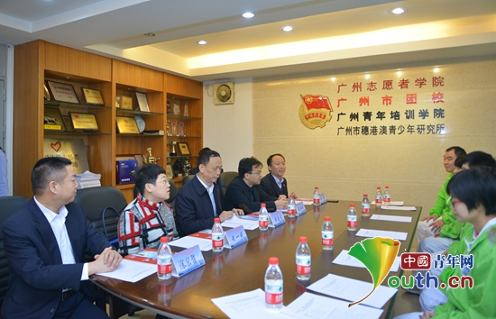
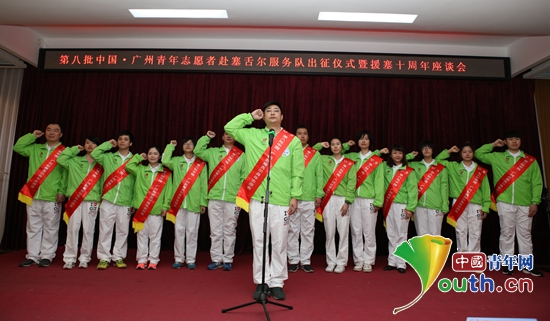

海外计划：援塞舌尔项目第八批志愿者宣誓出征
桂电志愿者网 日期：2018-01-04 来源：中国青年网
中国青年网北京1月4日电（记者李川）2017年12月28日，中国青年志愿者海外服务计划援塞舌尔项目第八批志愿者出征仪式暨援塞十周年座谈会在广州市召开，团中央青年志愿者行动指导中心主任张朝晖、广州市政协副主席庾建设出席仪式并讲话，团中央、广东团省委、广州团市委等项目主承办单位和志愿者来源单位有关同志、志愿者及家属等100余人参加了仪式。

中国青年志愿者海外服务计划援塞舌尔项目第八批志愿者出征仪式暨援塞十周年座谈会在广州市召开。图为座谈会现场。广州市团委 供图
仪式上，即将出征塞舌尔的14名志愿者进行了集体宣誓，广东团省委副书记武一婷为志愿者佩戴绶带。张朝晖在致辞中对广州援塞工作进行了总结并给予肯定。他表示，援塞项目通过动员各方参与、面向社会海选和带动市民参与等运作模式，有效调动了社会各方的资源和积极性，十年来广州援塞已经探索形成了特色工作模式，开拓了中国青年志愿者参与国际服务的新局面。庾建设对志愿者提出了树立大局意识当好国家形象的维护者、发扬奉献精神当好志愿精神的践行者、促进友好往来当好两地交流的友好使者的要求，希望志愿者们继承前辈优良传统，充分发扬“奉献、友爱、互助、进步”的志愿精神，为发展中塞友好关系贡献力量。

图为第八批出征塞舌尔的志愿者进行集体宣誓。广州市团委 供图
据悉，中国青年志愿者海外服务计划由团中央、商务部共同组织实施，15年来已累计选派多名优秀志愿者到亚洲、非洲、美洲的20余个国家开展志愿服务，取得了积极成效，受到当地政府和人民的广泛赞誉。援塞舌尔项目已实施十年，累计派遣志愿者近百人。第八批由广州团市委承办，由来自医院、社区卫生服务中心、企业、学校等单位的14名青年志愿者组成，年龄最大的37岁，最小的18岁。志愿者们将在未来一年内为塞舌尔提供医疗救助、文化交流、技术支持、技能培训等方面的志愿服务。此前，志愿者们已经接受了为期6天5夜的封闭式培训，包括健康防疫、外事常识、语言技巧、塞舌尔风土人情、援塞工作经验交流、心理调适与自我激励、团队合作、户外拓展等内容。为了帮助志愿者们更好地了解在塞工作生活情况，培训期间还邀请了第七批归国志愿者进行座谈交流。
【责任编辑：李彦龙】